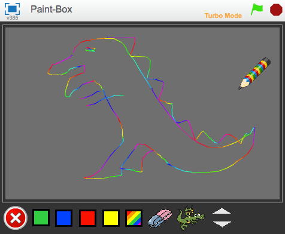
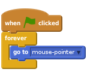
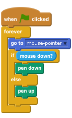
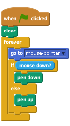
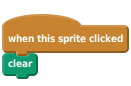
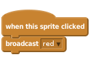
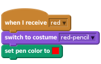
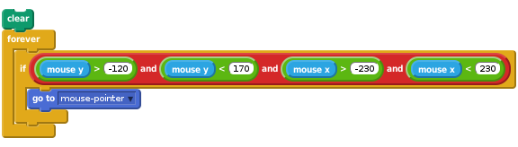
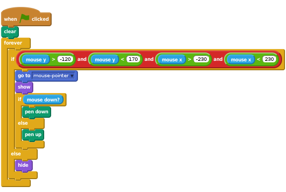

Hộp sơn
Level 3
Dự án này tạo ra một công cụ để vẽ giúp bạn tự sáng tạo. Bạn có thể đổi màu của các hàng, xóa màn hình, làm con dấu và nhiều hơn nữa!

Chúng ta sẽ bắt đầu với một cây bút vẽ mỗi khi bạn kéo nó xung quanh sân chơi.

Bây giờ chúng ta muốn dùng hình họa cây bút như một chiếc bút thật. Nếu bạn nhìn dưới phần bút bi, bạn sẽ thấy các khối liên quan đvến ẽ. Những khối màu đầu tiên chúng ta dùng là ‘pen down’ và ‘pen up’ (màu xanh lá cây).

Ấn vào biểu tượng lá cờ màu xanh.
Cây bút co đi theo con chuột không? Chuyện gì xảy ra nếu bạn giữ nút con chuột chỉ xuống và di chuyển nó? Đừng bận tâm về màu cây bút lúc này.

Ấn vào biểu tượng lá cờ màu xanh.
Các nét vẽ có biến mất khi bạn ấn vào lá cờ?
Thay bằng việc dừng lại và bắt đầu một dự án mới, hãy thêm một nút xoá nét vẽ, sử dụng khối ‘clear’

Ấn vào biểu tượng lá cờ màu xanh.
Nó có xóa hết phần vẽ lúc trước không?
Hiện chúng ta chỉ có thể vẽ nét màu xanh. Hãy vẽ với màu khác! Chúng ta sẽe têm vài hình họa ở cuối của khung. Những hình hoạt mới này sẽ giống như những nút màu. Nếu chúng ta ấn vào một bút, nó sẽ thay đổi màu vẽ của cây bút, và cả mày của hình họa cây bút chì.

Yes, that’s all it does. The hard work is done by the pencil.
Trong bút chì, tải thêm resources/red-pencil.png. Điều khiển để trung tâam ủa hình là đầu cây bút giống như cách bạn làm cho hình họa cây bút xanh.
Gợi ý: Nếu bạn ấn vào ô vuông màu trong khối ‘set pen color to’, bạn có thể ấn nút hình họa màu đỏ để chắc chắn chúng có cùng màu.

Ấn vào biểu tượng lá cờ màu xanh.
Bắt đầu bằng việc vẽ mộ đường thẳng. Sau đó ấn vào hình họa chọn màu đỏ và vẽ thêm. Cây bút chì có chuyển màu không? Nó có vẽ ra màu đỏ khô ng? Nó có vẽ ra màu từ đầu bút không?
Ấn vào biểu tượng lá cờ màu xanh.
Tất cả các nút chọn màu có hoạt động không? Chúng có chuyển màu bút chì đúng không? Chúng có làm bút chì vẽ đúng màu lựa chọn không? Cúng tcos vẽ ra từ đầu bút không?
Bạn hẳn nhận ra là bạn có thể vẽ khắp sân chơi, thậm chí trên lề. Chúngta khoông muốn việc này xảy ra. Chúng ta muốn giữ các nét vẽ ở giữa sân chơi bằng cách làm cho bút bi không thể di chuyển ngoài khu vực vẽ - khu màu xám nhạt trên sân chơi.
Hãy nhớ là Scratch đánh dấu các điểm bằng trục x và y. Vùng vẽ của chúngta naằm giữa điểm 230 và -230 trên trục x và giữa 170 và -120 trên trục y. Chúng ta có thể dùng những giá trị này trong khối ‘if’ (màu vàng), đảm bảo con chuột ở tỏng vùng này trước khi chúng ta gắn búti cì cho nó.
Để làm việc này, lấy một khối mày mới xung quanh khối ‘go to’ (màu xanh) và khối ‘if’ (màu vàng). Trong khối ‘if’ này, kiểm tra những việc sau:
Tọa độ con chuột lớn hớn -120 và nhỏ hơn 170 trên trục y, và lớn hơn -230, nhỏ hơn 230 trên trục x.
Ghi chú bạn sẽ cần dùng nhiwwuf block ‘and’ (màu xanh lá cây) để làm được việc này; một để dùng cho tung độ (y), một cho hoành độ (x)và một để gộp 2 yếu tố này với nhau:

Since we can’t draw outside of the drawing area, we could hide the pencil tool whenever we leave it. To do this, replace the if with an if else block. Keep the same condition for the if, and show the pencil if it’s true, otherwise hide it.

Click on the green flag.
Can you still draw inside the drawing area? Can you draw outside the drawing area? What happens to the pencil when you leave the drawing area and go back in?
Drawing lines is great, but there are times when you’ve made a mistake and you want to rub it out. We can do that with a new pencil tool that draws in grey (the same colour as the background).
Add a new button-sprite to the Stage to select the eraser. Use the resources/eraser.png costume for it, making it smaller to fit at the bottom of the Stage. It should work the same as the other colour-selection buttons, sending an eraser message.
The pencil sprite should respond to the eraser message by switching the pen colour to grey (remember you can use the picker to select the colour of the background). It will also need a new costume to represent the eraser tools: use the same resources/eraser.png costume. Remember to reset the costume’s centre.
Click on the green flag.
Does the eraser rub out lines? Does it work right up to the edges? Can you switch between eraser and pencil tools?
The next thing to add is a stamp tool, to stamp small pictures on the drawing.
broadcast stampvariable pencil mode for this sprite only. We’ll use this variable to keep track of whether or not we are drawing or stamping.pencil mode variable to false.pencil mode to true.pencil mode = true we should use the existing pen down, if not we should stamp instead.Click on the green flag.
Does the stamp tool work correctly?
What happens when you switch back to one of the normal pencil tools?
Well done, you have completed the basic steps for this project.
Try these challenges!
Let’s add a special pencil that paints in rainbow colours. It’s something that you can’t do with ordinary pens and pencils, so it’s nice to show off how drawing on a computer allows you do to different things. The secret to making it work is the change pen colour by block.
First, add the rainbow tool selection sprite and the rainbow tool costume to the pencil sprite:
broadcast rainbow when clicked.You need to build a script that will change the pen colour many times a second to give the rainbow effect (I found that changing it by 5 every 0.05 seconds works well, but you should try out different values). The timer Scratch card shows how you can make something change every so often. Use a change pen colour by 5 block instead of a change timer by -1 block inside the loop.
You also need to control that loop so that it only changes the pen colour when you’ve selected the rainbow pencil, otherwise all the pencils will have a rainbow effect! You can do this in a very similar way to how the pencil sprite changes between pencil and stamp modes. You need to create a variable called rainbowChange that has the value true when you want the rainbow effect and false otherwise. Every time the pencil responds to a tool-selection message, it should set the value of rainbowChange accordingly.
Use what you learnt from the stamp step above to control the rainbow effect. The scripts that respond to the tool-selection messages will set two variables each: pencilMode and rainbowChange.
Click on the green flag.
Does the rainbow tool work correctly?
What happens when you switch back to one of the normal pencil tools?
Rather than using the tool-selection sprites at the bottom of the stage, you can use the keyboard to select the different tools.
You can use the ifkey [] pressed blocks to respond to the keyboard. For each key you want to use, you’ll need another ifkey [] pressed, which sends the same message as the respective tool-selection sprite does when its clicked. Add these scripts to the stage.
I used these shortcuts:
Click on the green flag.
Do all the tools get selected with the correct keyboard shortcuts? Does each of the tools work correctly when you select it with keyboard? Are the correct tools still selected with the tool-selection sprites on the stage?
Another feature that most drawing packages have is the ability to change the size of the pencil. Let’s add that.
There’s one complication, though, which is that sometimes the resizing needs to change the pen size and sometimes it needs to change the pencil sprite’s costume size. It depends on whether you’re using a pencil or a stamp.
Create two new tool-selection sprites, called bigger and smaller. They should have the resources/bigger-selector.gif and resources/smaller-selector.gif costumes and should send the bigger and smaller messages.
The pencil sprite can respond to the messages by changing either the pen size by 1 or the costume size by 10, depending on the value of pencil mode (use an if-else block, similar to how the sprite chooses between putting the pen down or stamping)
Don’t forget the keyboard shortcuts for the bigger and smaller tools. I used the up and down arrows.
What you should have noticed is that changing the size of the stamp also changes the size of the pencil on-screen when you change to that tool.
To stop that, you need to set the size to 100% every time you change to a pencil tool, so that the tools look the right size.
To make it even better, have the stamp remember what size it was before you selected the pencil and go back to that size when you select the stamp tool again. The easiest way to do that is to create a new variable called stampSize, that is updated with the current size every time the stamp is resized. When the stamp tool is selected, it can set its size from the contents of this variable.
Click on the green flag.
Do the size controls work for the pencils?
What happens if you switch to the stamp, change the size and then switch back to a pencil?
Well done you’ve finished, now you can enjoy the game!
Don’t forget you can share your game with all your friends and family by clicking on Share on the menu bar!